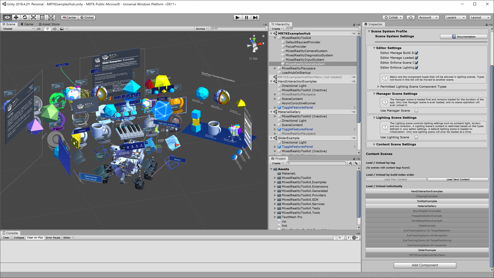
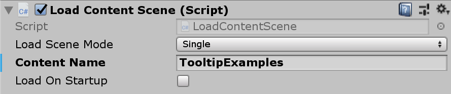
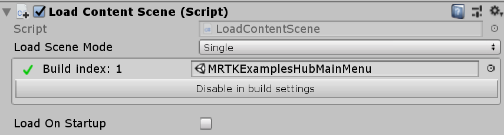
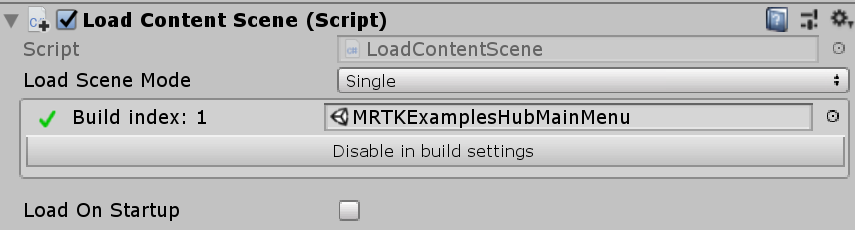
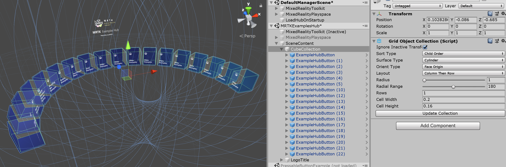

MRTK Examples Hub
MRTK Examples Hub は、複数の scene (シーン)を簡単に体験できる Unity シーンです。シーンのロードとアンロードには MRTK のシーン システムを使用します。
MRTKExamplesHub.unity は、MixedRealityToolkit や MixedRealityPlayspaceなどのコンポーネントを共有するコンテナ シーンです。MRTKExamplesHubMainMenu.unity は、立方体ボタンがあります。
前提条件
MRTK Examples Hub は、Scene Transition Service および関連スクリプトを使用します。Unity パッケージを介して、MRTK を使用している場合は、 release packages の一部である Microsoft.MixedReality.Toolkit.Unity.Extensions.x.x.x.unitypackage をインポートしてください。リポジトリをクローンして MRTK を使っている場合は、すでに MixedRealityToolkit.Extensions フォルダがプロジェクタ内にあるはずです。
MRTKExamplesHub シーンとシーン システム
MixedRealityToolkit.Examples/Demos/ExamplesHub/Scenes/ にある MRTKExamplesHub.unity を開きます。これは、MixedRealityToolkit、MixedRealityPlayspace および LoadHubOnStartup を含む空のシーンです。このシーンは、MRTK のシーン システムを使うように設定されています。MixedRealityToolkit 配下の MixedRealitySceneSystem をクリックします。Inspector (インスペクター) パネルにシーン システムの情報が表示されます。

インスペクターの下部に、 Scene System Profile で定義されているシーンのリストが表示されます。シーン名をクリックすると、ロード/アンロードできます。

 リスト内のシーン名をクリックして MRTKExamplesHub シーンをロードする例。
リスト内のシーン名をクリックして MRTKExamplesHub シーンをロードする例。
 HandInteractionExamples シーンをロードする例。
HandInteractionExamples シーンをロードする例。

複数のシーンをロードする例。
シーンの実行
このシーンは、Unity のゲーム モードとデバイスの両方で機能します。Unity エディタで MRTKExamplesHub シーンを実行し、MRTK の入力シミュレーションを使用してシーンの内容を操作します。ビルドと配置を行うには、シーン システムのリストに含まれる他のシーンとともに MRTKExamplesHub シーンをビルドします。インスペクターでは、 [Build Settings] にシーンを簡単に追加することもできます。 [Build Settings] で、 MRTKExamplesHub シーンがリストの一番上のインデックス 0 にあることを確認します。

MRTKExamplesHub でシーンをロードする方法
MRTKExamplesHub シーンには、 ExamplesHubButton prefab (プレハブ)があります。
このプレハブには、Interactable を含む FrontPlate オブジェクトがあります。
Interactable の OnClick() と OnTouch() イベントを使用すると、LoadContentScene スクリプトの LoadContent() 関数がトリガーされます。
LoadContentScene スクリプトのインスペクターで、ロードするシーン名を定義できます。



このスクリプトは、シーン システムの LoadContent() 関数を使用してシーンをロードします。 詳細については、Scene System ページを参照してください。
MixedRealityToolkit.SceneSystem.LoadContent(contentName, loadSceneMode);
メイン メニュー シーンに戻る
メイン メニュー シーン (MRTKExamplesHubMainMenu シーン) に戻るには、同じシーン システムの LoadContent() メソッドを使用します。ToggleFeaturesPanelExamplesHub.prefab は、LoadContentScene スクリプトを含む[ホーム] ボタンを提供します。各シーンでこのプレハブを使用するかカスタム ホーム ボタンを提供して、ユーザーがメイン シーンに戻ることができるようにします。 MRTKExamplesHub は共有 コンテナ シーンであるため、MRTKExamplesHub シーンに ToggleFeaturesPanelExamplesHub.prefab を配置すると常時表示できます。各サンプル シーンでは、ToggleFeaturesPanel.prefab が非表示/非アクティブであることを確認してください。
 

ボタンの追加
CubeCollection オブジェクトで、ExampleHubButton プレハブを複製 (または追加) し、GridObjectCollection の Update Collection をクリックします。
これにより、新しいボタンの総数に基づいて円柱のレイアウトが更新されます。
詳細については Object Collection ページを参照してください。

ボタンを追加したら、上記のように LoadContentScene スクリプト内のシーン名を更新します。 シーン システムのプロファイルにシーンを追加します。